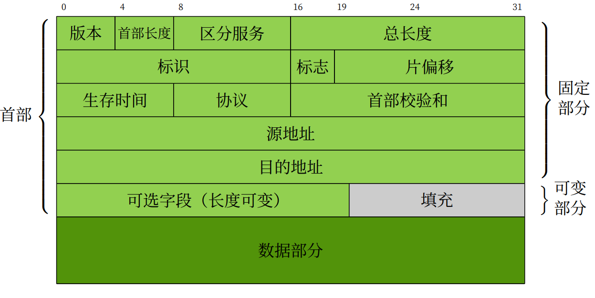

1. 实验目的
熟悉IP数据包格式；
掌握IP数据包的的发送和接收处理过程。
2. 实验任务
在完成协议栈之ARP协议的基础上，编写IP报文的发送、接收、IP分片以及计算校验和函数，使其能够发送和接收IP数据报文，并且能通过实验评测系统的测试。
3. 实验原理
3.1. IP协议概要
从前面的实验可知，数据链路层提供两个直连设备之间的通信功能，而一旦跨越不同的数据链路，就需要借助网络层。IP(Internet Protocol，网际协议) 是TCP/IP协议网络层的协议，其主要作用是“实现终端节点之间的通信”，也叫“点对点（point-to-point）通信”。IP可大致分为三大作用模块，分别是IP寻址、IP分包与组包以及路由转发，其中，路由转发功能涉及到路由协议，在本节实验中不做重点介绍。
3.1.1. IP地址
在TCP/IP通信中所有主机或路由器必须设定自己的IP地址。严格来说，每块网卡至少配置一个或一个以上的IP地址。现在广泛使用的IPv4中，IP地址以32为二进制数字的方式表示，并使用子网掩码来识别网络地址和主机地址。将IP地址与子网掩码作“与”运算获得网络地址，将IP地址与子网掩码的非作“与”运算获得主机地址。网络地址标识在同一个物理网络上的所有宿主机，主机地址标识该物理网络上的每一个宿主机。如果把IP当成信封上的地址时，那么，网络地址就相当于“城市名”，主机地址相当于“门牌号”。

其中，IP地址后边，书写/（斜线号）用来分隔IP地址与子网掩码位数。
3.1.2. IP协议
IP提供了一种尽力而为、无连接的数据报交付服务。“尽力而为”的含义是不保证IP数据报能成功到达目的地。“无连接”意味着IP不维护网络单元（即路由器）中数据报相关的任何链接状态信息，每个数据报独立于其他数据报来处理，这也意味着IP数据报可不按顺序交付。
提示
为什么IP要采用面向无连接呢？
主要有两点原因：一是为了简化，二是为了提速。面向连接每次通信之前都要事先建立连接，又会降低处理速度。IP需要有连接时，可以委托上一层提供此服务。
3.2. IP数据包格式
网络层是在数据链路层之上，其数据包结构如下：

本实验是基于IPv4协议上完成的，以下主要介绍IPv4版本的IP协议。IPv4的头部结构长度为20字节，若含有可变长的选项部分，最多60字节。
版本号（Version） ：长度4比特。标识目前采用的IP协议的版本号。一般的值为0100（IPv4），0110（IPv6）。
首部长度（Header Length） ：长度4比特。这个字段的作用是为了描述IP包头的长度，因为在IP包头中有变长的可选部分。IP包头最小长度为20字节，则首部长度可设为5，4bit*5 =20字节。
区分服务(Type Of Service，TOS) ：3位优先权字段(现已被忽略) + 4位TOS字段 + 1位保留字段(须为0)。4位TOS字段分别表示最小延时、最大吞吐量、最高可靠性、最小费用，其中最多有一个能置为1。应用程序根据实际需要来设置TOS值，如ssh和telnet这样的登录程序需要的是最小延时的服务，文件传输ftp需要的是最大吞吐量的服务。本实验中，可将TOS设置为0。
总长度 : 指整个IP数据报的长度，单位为字节，即IP数据报的最大长度为65535字节(2的16次方)。由于MTU的限制，长度超过MTU的数据报都将被分片传输，所以实际传输的IP分片数据报的长度远远没有达到最大值。
下来的3个字段（标识、标志、位偏移）则描述如何实现分片重组:
标识 ：唯一地标识主机发送的每一个数据报，其初始值是随机的，每发送一个数据报其值就加1。同一个数据报的所有分片都具有相同的标识值。本实验中，标识字段可从0开始计数，然后往上自增。
标志 : 位1保留，位2表禁止分片(DF)，若设置了此位，IP模块将不对数据报进行分片，在此情况下若IP数据报超过MTU，IP模块将丢弃数据报并返回一个ICMP差错报文；位3标识更多分片(MF)，除了数据报的最后一个分片，其他分片都要把它设置为1。
位偏移 ：分片相对原始IP数据报数据部分的偏移。实际的偏移值为该值左移3位后得到的，所以除了最后一个IP数据报分片外，每个IP分片的数据部分的长度都必须是8的整数倍。
生存时间 :：数据报到达目的地之前允许经过的路由器跳数。TTL值被发送端设置，常设置为64。数据报在转发过程中每经过一个路由该值就被路由器减1.当TTL值为0时，路由器就将该数据包丢弃，并向源端发送一个ICMP差错报文。TTL可以防止数据报陷入路由循环。
协议 : 区分IP协议上的上层协议。在Linux系统的/etc/protocols文件中定义了所有上层协议对应的协议字段，ICMP为1，TCP为6，UDP为17。
头部校验和 ： 由发送端填充接收端对其使用CRC算法校验，检查IP数据报头部在传输过程中是否损坏。
源IP地址和目的IP地址 : 表示数据报的发送端和接收端。一般情况下这两个地址在整个数据报传递过程中保持不变，不论中间经过多少个路由器。
选项 ：可变长的可选信息，最多包含40字节。[RFC0791]介绍了大多数的选项，当时处于IPv4设计阶段，Internet的规模相当小，对来自恶意用户的威胁关注较少。由于IPv4头部大小的限制以及相关的安全问题，因此很多选项不再是实用或可取的。
3.3. IP分片
从上节的介绍可知，通过IP数据报头部中的标识、标志、位偏移这三个字段，可以稳定的完成数据报的分片与重组操作。下图描述了一个UDP包长度为3000字节的UDP数据报（该报文头部为8字节，负载为2992字节）被分片成三个IPv4分组（没有选项），UDP头部只出现在第一个分片里。

3.4. 校验和计算
3.4.1. IP头部校验和
IP头部校验和只针对IP首部做校验，对其负载数据的校验是上层协议负责的，它不需要关心负载数据在传输过程中出错与否。IP数据报在转发的过程中，其头部字段就会被改变一次（比如修改TTL等），但IP数据报中的负载数据字段是不会改变的，因此，通过只校验IP头部的方式，也可以提高路由器处理分组的效率。
3.4.2. 反码求和
IP头部校验和采用 反码求和 方式来校验。不光在IP层的校验中，在ICMP、UDP、TCP等协议中都是使用反码求和来计算它们头部以及整个数据区的校验和。那么反码求和是怎么样计算的？顾名思义，它就是将二进制数据的各位依次取反，然后再求和运算。尽管这种算法很简单，但因为对每个二进制数都取反码会造成一定的内存和时间开销，所以再反码求和函数中，我们一般采用以下做法：
对两个二进制数直接进行加法运算；
如有进位，则加到下一列；
若最高位相加仍产生进位，则要在最后的结果中加1；
对最后结果取反码。
在发送端发送前，首先把校验和字段置为0，然后把校验和要计算的数据看成由一串16bit的半字组成，并对每个16bit依次进行反码求和运算，并将最终结果保存在校验和字段中。
接收端收到后，首先备份校验和字段，接着把接收报文中的校验和字段置为0，然后把校验和要计算的数据看出是一串16bit的半字组成，并对每个16bit依次进行反码求和，最后比较备份的校验和与计算出来的校验和是否一致，如果一致，则说明传输没有任何差错，反之则认为接收到的报文有错，丢弃不处理。
4. 代码实现与检测
请同学们认真阅读本实验提供的代码框架，并补充完整src/ip.c文件中的ip_in()函数、ip_out()函数和ip_fragment_out()函数，以及src/utils.c文件中的checksum16() 函数。
4.1. IP数据报输入处理
同学们需要自行实现ip_in()函数，功能如下：
Step1 ：如果数据包的长度小于IP头部长度，丢弃不处理。
Step2 ：接下来做报头检测，检查内容至少包括：IP头部的版本号是否为IPv4，总长度字段小于或等于收到的包的长度等，如果不符合这些要求，则丢弃不处理。
Step3 ：先把IP头部的头部校验和字段用其他变量保存起来，接着将该头部校验和字段置0，然后调用checksum16函数来计算头部校验和，如果与IP头部的首部校验和字段不一致，丢弃不处理，如果一致，则再将该头部校验和字段恢复成原来的值。
Step4 ：对比目的IP地址是否为本机的IP地址，如果不是，则丢弃不处理。
Step5 ：如果接收到的数据包的长度大于IP头部的总长度字段，则说明该数据包有填充字段，可调用buf_remove_padding()函数去除填充字段。
Step6 ：调用buf_remove_header()函数去掉IP报头。
Step7 ：调用net_in()函数向上层传递数据包。如果是不能识别的协议类型，即调用icmp_unreachable()返回ICMP协议不可达信息。
4.2. 校验和算法
同学们需要自行实现checksum16()函数，可参考上述实验原理中的 校验和计算说明 ：
注意
checksum16()函数在src/utils.文件。
uint16_t checksum16(uint16_t *data, size_t len)
{
// TODO
}
Step1 ：把data看成是每16个bit（即2个字节）组成一个数，相加（注意，16位加法的结果可能会超过16位，因此加法结果需要用32位数来保存）。
Step2 ：如果最后还剩8个bit值，也要相加这个8bit值。
Step3 ：判断相加后32bit结果值的高16位是否为0，如果不为0，则将高16位和低16位相加，依次循环，直至高16位为0为止。
Step4 ：将上述的和（低16位）取反，即得到校验和。
4.3. IP数据报输出处理
同学们需要自行实现ip_out()函数，功能如下：
Step1 ：首先检查从上层传递下来的数据报包长是否大于IP协议最大负载包长（1500字节（MTU） 减去IP首部长度）。
Step2 ：如果超过IP协议最大负载包长，则需要分片发送。首先调用buf_init()初始化一个ip_buf,将数据报包长截断，每个截断后的包长 = IP协议最大负载包长（1500字节 - IP首部长度），调用ip_fragment_out()函数发送出去。如果截断后最后的一个分片小于或等于IP协议最大负载包长，调用buf_init()初始化一个ip_buf，大小等于该分片大小，再调用ip_fragment_out()函数发送出去。注意，最后一个分片的MF = 0。
Step3 ：如果没有超过IP协议最大负载包长，则直接调用ip_fragment_out()函数发送出去。
4.4. IP数据报输出处理
同学们需要自行实现ip_fragment_out()函数，功能如下：
Step1 ：调用buf_add_header()增加IP数据报头部缓存空间。
Step2 ：填写IP数据报头部字段。
Step3 ：先把IP头部的首部校验和字段填0，再调用checksum16函数计算校验和，然后把计算出来的校验和填入首部校验和字段。
Step4 ：调用arp_out函数()将封装后的IP头部和数据发送出去。
4.5. 实验自测
IP自测需要通过ip_test和ip_frag_test测试。

接着，打开VSCode的终端，到build目录下，输入ctest -R ip_test和ctest -R ip_frag_test进行自测。

如果提示有错，请参照eth协议自测的排除方法来找bug。
4.5.1. GDB调试
本实验支持使用GDB调试，请参考 Windows开发环境搭建 中的“Windows下编译和调试”
5. 实验提交
请参考实验二的提交方式。